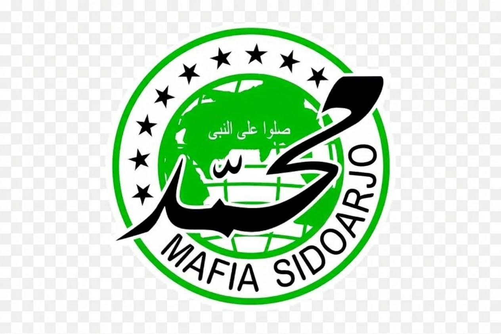

Mafia Sidoarjo yang terinspirasi dari jiwa pesilat Sidoarjo, dikemas dalam poin-poin yang mantap dan tegas: Berlandsakan Sholawat (Kaligrafi Muhammad & Teks Arab): Menjadikan rasa cinta kepada Nabi Muhammad SAW dan sholawat sebagai sandaran utama, karena kekuatan sejati pesilat lahir dari keimanan dan keluhuran budi pekerti, bukan kesombongan fisik. Berjiwa Ksatria & Berwawasan Luas (Globe/Bumi): Menggambarkan karakter pendamai yang terbuka dan menjunjung tinggi persaudaraan, menggunakan seni bela diri untuk membawa kebaikan serta kedamaian bagi masyarakat luas. Menjaga Sanad dan Adab (Sembilan Bintang): Tunduk pada ajaran serta bimbingan para guru dan Wali, menjaga tradisi keilmuan silat dengan adab yang tinggi, serta menjadi penuntun dalam kegelapan. Tangguh di Luar, Teduh di Dalam (Warna Hitam & Hijau): Memiliki keteguhan hati dan keberanian bagai batu karang (hitam), namun tetap membawa kesejukan, kesuburan moral, dan kedamaian bagi sekelilingnya (hijau). Persaudaraan Tanpa Putus (Lingkaran & Teks Mafia Sidoarjo): Mempererat tali seduluran yang solid dan satu komando sebagai pemuda berani yang siap menjadi benteng moral serta penjaga keutuhan tanah kelahiran Sidoarjo.